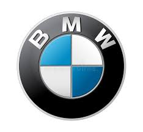

| Enfield | Honda | TVS | Bajaj | MTB | KTM |
|---|---|---|---|---|---|
 |
 |
||||
| Kawasaki | Trek | Yamaha | Mahindra | BMW | Tiger |
|---|---|---|---|---|---|
 |
 |
Let's Play Soulful Music..
A vehicle (from Latin vehiculum)is a machine designed for self-propulsion, usually to transport people, cargo, or both. Vehicles include wagons, bicycles, motor vehicles (motorcycles, cars, trucks, buses, mobility scooters), railed vehicles (trains, trams), watercraft (ships, boats, underwater vehicles), amphibious vehicles (screw-propelled vehicles, hovercraft), aircraft (airplanes, helicopters, aerostats), and spacecraft.
Enjoy the Raider Song..
There are over 1 billion bicycles in use worldwide.
In 2002 there were an estimated 590 million cars and 205 million motorcycles in service in the world.
At least 500 million Chinese Flying Pigeon bicycles have been made, more than any other single model of vehicle.
The most-produced model of motor vehicle is the Honda Super Cub motorcycle, having sold 60 million units in 2008.
The most-produced car model is the Toyota Corolla, with at least 35 million made by 2010.
The most common fixed-wing airplane is the Cessna 172, with about 44,000 having been made as of 2017.